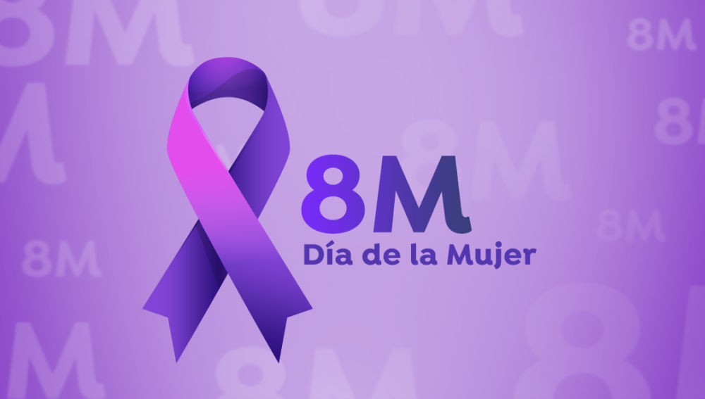
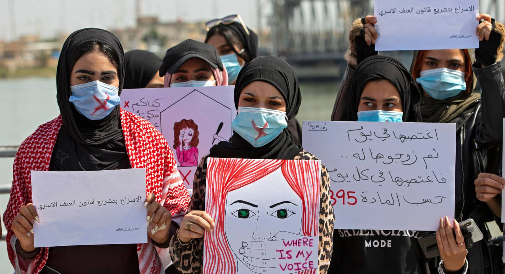

En esta sección se hablará del día de la mujer y acontecimientos relacionados

Todos los 8 de marzo se conmemora en el mundo la lucha de las mujeres por la igualdad, el reconocimiento y ejercicio efectivo de sus derechos. El pedido por una justicia antipatriarcal, entre las principales demandas de este 8M.
8 de marzo de 1908
El 8 de marzo de 1908, un suceso transcendental marcó la historia del trabajo y la lucha sindical en el mundo entero: 129 mujeres murieron en un incendio en la fábrica Cotton, de Nueva York, Estados Unidos, luego de que se declararan en huelga con permanencia en su lugar de trabajo. El motivo se debía a la búsqueda de una reducción de jornada laboral a 10 horas, un salario igual al que percibían los hombres que hacían las mismas actividades y las malas condiciones de trabajo que padecían. El dueño de la fábrica ordenó cerrar las puertas del edificio para que las mujeres desistieran y abandonaran el lugar. Sin embargo, el resultado fue la muerte de las obreras que se encontraban en el interior de la fábrica. Ese mismo año, el 3 de mayo, se realizó un acto por el día de la mujer en Chicago, preámbulo para que el 28 de febrero de 1909, en Nueva York, se conmemore por primera vez el “Día Nacional de la Mujer”.
Con este antecedente, un año después, en 1910, se desarrolló la segunda Conferencia Internacional de Mujeres Socialistas, en la capital danesa, Copenhague. El tema central fue el sufragio universal para todas las mujeres, y por moción Clara Zetkin, líder del “levantamiento de las 20.000”, se proclamó oficialmente el 8 de marzo como el Día Internacional de la Mujer Trabajadora, en homenaje a las mujeres caídas en la huelga de 1908.

¿Hay razones para seguir la lucha...?
La respuesta con los datos más recientes de la ONU:
2.700 millones de mujeres no pueden acceder a las mismas opciones laborales que los hombres.
En 2019, menos del 25% de los parlamentarios eran mujeres.
Una de cada tres mujeres sigue sufriendo violencia de género.
De las 500 personas en puestos de jefatura ejecutiva que lideran las empresas con mayores ingresos en el mundo, menos del 7% son mujeres.
Las mujeres todavía tienen menos probabilidades de ser empresarias y enfrentan más desventajas cuando desarrollan un negocio. Y hasta 2086 no se cerrará la brecha salarial si no se contrarresta la tendencia actual.
Y no sólo eso, hoy en día en muchos paises, como por ejemplo, Afganistan, donde las mujeres viven un régimen asqueroso. Tras una guerra de décadas, los talibanes tomaron el poder en Afganistán, algo que preocupa a la comunidad de dicho país, pero principalmente a las mujeres: se teme que pierdan los derechos adquiridos en los últimos años y, según la agencia de refugiados de la ONU, el ochenta por ciento de los desplazados son mujeres y niños.
En este contexto, la Asociación Revolucionaria de Mujeres de Afganistán (Revolutionary Association of the Women of Afghanistan, RAWA) publicó un listado con las 29 prohibiciones que deben cumplir tras el avance talibán. Se trata de la organización político-social más antigua de mujeres afganas. Tal como explican, “luchan por la paz, la libertad, la democracia y los derechos de las mujeres en un Afganistán devastado por el fundamentalismo desde 1977″. Vamos a presentarte 10 de ellos, los demás podés verlos en esta página.
Completa prohibición del trabajo femenino fuera de sus hogares, que igualmente se aplica a profesoras, ingenieras y demás profesionales. Solo unas pocas doctoras y enfermeras tienen permitido trabajar en algunos hospitales en Kabul.
Completa prohibición de cualquier tipo de actividad de las mujeres fuera de casa a no ser que sea acompañadas de su mahram (parentesco cercano masculino como padre, hermano o marido).
Prohibición a las mujeres de estudiar en escuelas, universidades o cualquier otra institución educativa (los talibanes han convertido las escuelas para chicas en seminarios religiosos).
Azotes, palizas y abusos verbales contra las mujeres que no vistan acorde con las reglas talibán o contra las mujeres que no vayan acompañadas de su mahram.
Prohibición del uso de cosméticos (a muchas mujeres con las uñas pintadas les han sido amputados los dedos).
Prohibición a las mujeres de reír en voz alta (ningún extraño debe oír la voz de una mujer). Esto también pasa con los zapatos con taco NINGÚN varón puede oir los pasos de una mujer
Prohibición a las mujeres de practicar deportes o entrar en cualquier centro o club deportivo.
Prohibición a las mujeres de llevar indumentarias de colores vistosos. En términos de los talibanes, se trata de “colores sexualmente atractivos”.
Prohibición del acceso de las mujeres a los baños públicos.
Opacidad obligatoria de todas las ventanas para que las mujeres no puedan ser vistas desde fuera de sus hogares.
También en la India el 39% de todos los adultos VIH-positivos en la India son mujeres (por violación). 70% de ellas son sometidas regularmente a la violencia familiar. Cada 29 minutos, una mujer es víctima de violación. En el siglo XX, más de 50 millones de niñas indias fueron asesinadas, y 100 millones de mujeres y niñas han sido objeto de tráfico humano. 44,5% de las niñas en el país se casan antes de cumplir 18 años.
Lo más indignante es que hay hombres que hacen chistes/rebajan esta situación de las mujeres pensando que es gracioso, y tienen el apoyo de otras personas (Incluso lamentablemente mujeres que no viven esa situación y tienen más privilegios que las que sí) solamente porque, obviamente, viven con sus privilegios sociales. A pesar de que a esas mujeres que también rebajan les afecte la misoginia y el machismo de distinta forma.